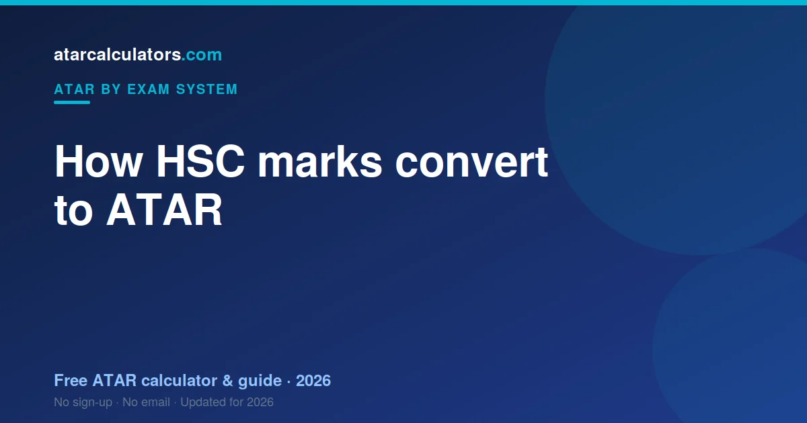

HSC marks are scaled by UAC to account for how strong each subject’s cohort is, combined into an aggregate from your best 10 units, and ranked into an ATAR between 0.00 and 99.95. So your ATAR reflects your rank against your age group, not the raw average of your marks. NESA runs the HSC; UAC works out your ATAR.
Key takeaways
- Your ATAR is a rank from 0.00 to 99.95, not the average of your HSC marks.
- UAC scales each subject, based on how strong its cohort is.
- Your best 10 units of scaled marks, including 2 units of English, form your aggregate.
- That aggregate is ranked against your age group to give your ATAR.
- NESA runs the HSC and gives you your marks; UAC works out your ATAR.
- Each HSC mark is half internal assessment, half exam.
- You cannot average your marks to get your ATAR.

A rank, not an average
The first thing to understand is that your ATAR is a rank. An ATAR of 85 does not mean your marks averaged 85. It means you finished ahead of about 85% of your age group.
Because it is a rank, it lets universities compare students who took completely different subjects. That is the whole point. Your marks feed into it, but they are not it.
How your HSC mark is built
Each HSC mark comes from two equal halves. One half is your internal assessment, set and marked by your school across the year. The other half is your external exam, set and marked by NESA.
The two are averaged to give your HSC mark. So a strong year of internal work can steady a shaky exam, and a strong exam can lift a patchy year. Neither half decides your mark alone.
Why your school rank matters
Here is a part students miss. Your internal marks are moderated against your cohort’s exam performance, in rank order. Your school’s group exam results set the range of internal marks, and your rank decides where you sit in it.
So your position in your class matters as much as your raw internal score. Climbing even one or two places can lift your moderated mark. Every internal task is a chance to improve your rank.
Step 1: Your subjects are scaled
Once you have your HSC marks, UAC scales them. Scaling adjusts each subject so that a mark in one subject is worth the same as the same mark in another.
It works by looking at how the students in a subject perform across all their subjects. If the group is strong overall, the subject scales up. If it is broad, it scales down. Your rank within the subject never changes.
Why scaling exists
Scaling exists to be fair. Without it, a student who took easier subjects would have an advantage over one who took harder, more competitive subjects. Scaling removes that edge.
This is why the idea that “hard subjects scale up” is only half true. A subject scales up because its students are strong, not because the content is difficult. See HSC scaling explained.
Step 2: Your best 10 units
NSW builds your ATAR from 10 units of scaled marks. Most subjects are worth two units, so this is usually about five subjects. Extension courses are worth one unit each.
Only your best 10 units count. If you took more, your weakest results can drop out. This is why taking a small buffer of extra units is a sound safety net.
The English requirement
Two of your 10 units must be English. English is compulsory in the HSC, and it must count towards your ATAR. This does not mean English has to be your best subject.
It means at least two units of English are always in your aggregate. So take English seriously and aim for the best English mark you can, even if it is not your favourite subject.
Step 3: Your aggregate
UAC adds your best 10 units of scaled marks into a single number called an aggregate. Your strongest subjects do most of the work; your weakest count for less, or drop out.
The maximum aggregate corresponds to a perfect set of scaled marks. Your aggregate is what gets ranked next, so building strong scaled marks across your best subjects is what lifts it.
Step 4: Your aggregate becomes a rank
The final step turns your aggregate into your ATAR. Every student’s aggregate is placed in order, from highest to lowest. Your position in that order is your percentile rank, and that is your ATAR.
Because it is a rank, your ATAR depends on how everyone else did, not just on your own aggregate. The top aggregate receives 99.95, and the rest spread down to 0.00 in steps of 0.05.
A worked example
Say a student takes English Advanced, Maths Advanced, Chemistry, Economics and Biology. After scaling, Chemistry and Maths rise a little, English holds steady, and the weakest subject drops slightly.
UAC adds the best 10 units of these scaled marks into an aggregate. That aggregate is compared with every other student’s. If it sits above 88% of them, the ATAR is about 88.00. Consistent, strong marks across a few subjects carried the rank.
HSC bands are not your ATAR
Students often confuse HSC bands with the ATAR. A Band 6 is the top HSC band in a subject, awarded for a mark of 90 or above. It describes your performance in that one subject.
Your ATAR is a separate statewide rank. You can earn several Band 6s and still have an ATAR below what you expected, because the ATAR depends on scaling and on how everyone else did. Bands describe subjects; the ATAR ranks students.
Who does what in NSW
Two bodies are involved. NESA, the NSW Education Standards Authority, runs the HSC: it sets your courses, your exams, and your marks and bands. UAC, the Universities Admissions Centre, scales those marks and works out your ATAR.
So NESA gives you your HSC; UAC gives you your ATAR. We cover UAC in detail in UAC explained.
Why you cannot do it by hand
There is no formula you can run at home for your exact ATAR. It depends on how every other student in NSW performs, and on the exact scaling for that year. Both are only known once all results are in.
This is why calculators give an estimate: they apply last year’s scaling to your marks, which is close but not the final figure. It is a guide, not a guarantee.
Estimate your ATAR
The clearest way to see all this is to try it. Our HSC ATAR calculator applies the latest official scaling to your HSC marks and gives you an estimated ATAR.
Compare that estimate with the cutoff for your course, and you have a clear target for the rest of the year. You can also use the NSW ATAR calculator for the same result.
How many subjects should you take?
You need 10 units to get an ATAR, which is usually about five subjects. Most students take a little more than that, and it is a smart safety net. Because only your best 10 units count, an extra subject or Extension course means one weak result can drop out without hurting your ATAR.
The trade-off is time and workload. But for many students, one extra unit of insurance is worth it. If a subject goes badly, your best results still carry your rank, and the weak one quietly falls away.
What scaling does to a typical mark
Numbers make scaling clearer. A raw HSC mark of 80 in a subject with a strong cohort might scale up to around 84. The same raw 80 in a broad-entry subject might scale down to around 76. Same raw mark, different scaled value, because the competition differs.
This is why two students with identical HSC marks can end up with different ATARs. What counts is not just your mark, but how the subject scales and how you ranked within it. Your scaled marks, not your raw ones, feed your aggregate.
Why you cannot game the system
Students sometimes hope to boost their ATAR by loading up on high-scaling subjects. It rarely works. Scaling only rewards your position within a subject’s cohort, so a high-scaling subject you score poorly in gains you nothing.
The only reliable strategy is to do well in whatever you take. Choose subjects you can rank strongly in, take a small buffer for safety, and give your best subjects your best effort. There is no shortcut around simply performing well.
Turning your estimate into a plan
Once you understand how your ATAR is built, an estimate becomes a planning tool. Enter your current marks, see your estimated rank, and compare it with the cutoff for your course. That gap is your target for the rest of the year.
Re-run the estimate after each round of assessments. As real marks replace predictions, the number sharpens, and you can see exactly which subjects are moving your rank the most. That tells you where your effort pays off.
Exams versus internal assessment
It is worth being clear about the two halves of your mark. Your internal assessment measures your work across the year, through tasks set by your school. Your external exam measures your performance on one day, set by NESA. They are averaged equally.
Neither half is more “real” than the other. A student who works steadily all year and one who peaks in the exam can end up with the same mark. This balance is deliberate, and it rewards consistency as much as exam nerve.
What a strong aggregate looks like
Your aggregate is the sum of your best 10 units of scaled marks. A strong aggregate comes from strong scaled marks across several subjects, not from one standout result. Because English is compulsory, two of those units are always English.
So the students with the highest ATARs are usually those who are strong and consistent across their whole program, including English. Spreading your effort across your best subjects builds a higher aggregate than pouring everything into one.
A note on Extension units
Extension courses are worth one unit each, and they can be a useful addition for capable students. Because they often scale well and add to your best 10 units, a strong Extension result can lift your aggregate.
But they add workload, so weigh them carefully. Only take an Extension course you can genuinely do well in. A strong result helps; a weak one in a demanding course can cost you more time than it returns.
Your ATAR in one sentence
If you remember one thing, make it this: your ATAR is a rank built from your scaled marks, not an average of them. UAC scales each subject, combines your best 10 units, and ranks the result against your age group.
Everything else follows from that. Do well in subjects you can excel in, rank strongly within them, keep English solid, and take a small buffer of extra units. The system does the rest, fairly, and a calculator lets you preview where you stand.
Common questions
How are HSC results converted to an ATAR?
UAC scales your HSC marks to account for each subject’s cohort strength, adds your best 10 units of scaled marks into an aggregate, and ranks that aggregate against your age group to give an ATAR from 0.00 to 99.95.
What is scaling in the HSC?
Scaling adjusts each subject so the same mark means the same thing across subjects, based on how strong the group taking it was. It decides how much each of your marks contributes to your ATAR.
How many subjects count for the HSC ATAR?
Your ATAR uses your best 10 units of scaled marks, including 2 units of English. Most subjects are worth two units, so this is usually about five subjects.
Why isn't my ATAR the average of my marks?
Because the ATAR is a rank, not an average. Your scaled marks are combined and ranked against your age group, so your ATAR reflects your position, not the arithmetic mean of your HSC marks.